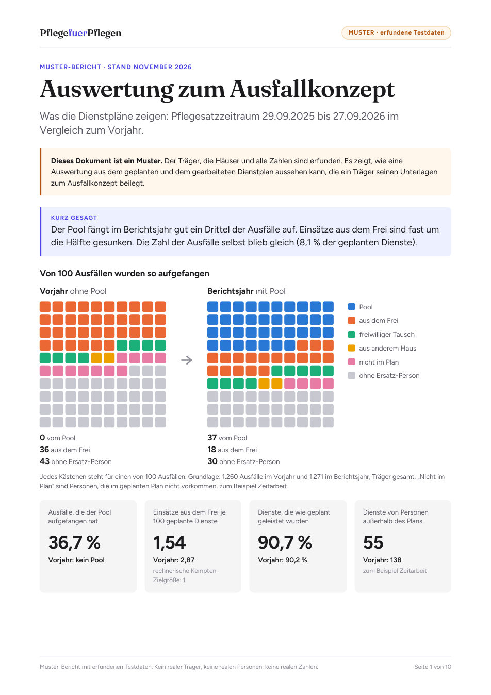

Für Träger mit Springer-Pool und Heime mit Ausfallkonzept
Ihr Dienstplanprogramm warnt beim Planen. PflegefuerPflegen zeigt, was danach passiert ist.
Aus dem geplanten und dem gearbeiteten Dienstplan: Wer hat Ausfälle aufgefangen? Wie oft kam jemand aus dem Frei? Welches Haus trägt welchen Anteil am Pool? Mit Ausgangswert aus Ihren alten Plänen.
Aus dem Muster-Bericht mit erfundenen Testdaten: Träger mit drei Häusern, Vorjahr ohne Pool gegen Berichtsjahr mit Pool · Tippen zum Vergrößern
Ohne Termin: Bericht lesen, Fragen per Mail. Ein Gespräch nur, wenn Sie es möchten.
Was es zeigt
Der 2. Nachtrag zum Rahmenvertrag nennt Beispiele wie die Dienstplansicherheit, schreibt aber keine Kennzahlen vor. PflegefuerPflegen liefert die Zahlen, die sich aus Dienstplänen belegen lassen, mit offener Methode.
Je Haus: Pool, aus dem Frei, freiwilliger Tausch, anderes Haus, Personen außerhalb des Plans oder ohne Ersatz-Person.
Je 100 regulär geplante Dienste, im Verlauf und neben der rechnerischen Kempten-Zielgröße von 1.
Pool-Stunden und Stellenanteile je Einrichtung für den Pflegesatzzeitraum.
Aus 6 bis 12 Monaten alter Pläne, nach dem Vorgehen der Evaluation der Hochschule Kempten. Eine Rechnung, keine Prognose.
Fällt ein geplanter Dienst aus, prüft die Auswertung, wer in derselben Schicht im Haus zusätzlich gearbeitet hat. Über das Jahr summiert ergibt das die Anteile je Haus. Jede Zählregel steht im Bericht.
Beispieltag aus den Testdaten · Tippen zum Vergrößern
Wie oft Mitarbeitende an einem freien Tag einspringen, je 100 geplante Dienste und im Verlauf. Ihre Maßnahmen stehen mit Datum im Bild. So sehen Sie, was sich danach verändert hat.
Verlauf über zwei Jahre, Muster mit erfundenen Testdaten · Tippen zum Vergrößern
Bei Springern über mehrere Häuser werden die tatsächlichen Stellenanteile des letzten Pflegesatzzeitraums rückblickend je Haus ermittelt (§ 5 des 2. Nachtrags). Die Tabelle zeigt diese Aufteilung, dazu den Anteil jedes Hauses an den Ausfällen.
Muster mit erfundenen Testdaten · Tippen zum Vergrößern
Aus Ihren alten Plänen: an wie vielen Tagen wie viele Dienste ausfielen, und mit wie vielen Pool-Diensten an 50, 75 oder 90 % der Tage alle Ausfälle gedeckt gewesen wären. Gemeinsamer Pool und jedes Haus für sich im Vergleich.
Muster mit erfundenen Testdaten · Tippen zum Vergrößern
Ablauf
Für Heime ohne Pool gilt derselbe Ablauf für ein Haus, als Ausgangswert für Ihr Ausfallkonzept. Wir starten mit den ersten Trägern im Januar 2027.
Warum jetzt
Maßnahmen der Organisationsentwicklung sollen dokumentiert und den Kostenträgern auf Anforderung vorgelegt werden (§ 2). Bei Springern über mehrere Häuser sind die Stellenanteile rückblickend je Einrichtung zu ermitteln (§ 5). Wird eine Sonderfunktionsstelle über die Personalobergrenzen hinaus refinanziert, ist in der nächsten Pflegesatzverhandlung zu prüfen, ob das Ausfallkonzept erfolgreich ist (§ 4).
Nach einem Wechsel des Dienstplanprogramms fehlen alte Pläne manchmal. Lesen Sie sie ein, solange es sie gibt. Dann haben Sie ein Vorher, mit dem sich jede spätere Veränderung vergleichen lässt.
In der Evaluation des bayerischen Modellprojekts zu Springerkonzepten gab es für die Zeit vor dem Projekt keine exakten Vergleichsdaten. Aus Dienstplänen lässt sich dieses Vorher nachträglich rechnen.
Die Dienstpläne werden im Browser gelesen, nicht hochgeladen und nicht gespeichert. Namen werden beim Einlesen durch Nummern ersetzt. Der Bericht zeigt nur Gruppen ab fünf Personen und keine Werte einzelner Personen.
Kein Dienstplanprogramm und keine Einsatzsteuerung im Alltag. Keine Rechtsberatung und keine Bewertung, ob Arbeitszeiten zulässig waren. Die Auswertung zeigt Entwicklungen, keine Ursachen.
Feste Kennzahlen oder eine Vorlage für den Nachweis gibt es nicht. Welche Unterlagen in der Pflegesatzverhandlung zählen, entscheidet sich im Einzelfall. Der Bericht liefert die Zahlen dafür, mit offener Methode.
Zehn Seiten, erfundene Testdaten, ohne Anmeldung. Fragen beantworte ich per Mail.
Jordan Newton, Gründer · Köln
kontakt@pflegefuerpflegen.de
01520 9461135
